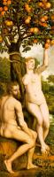
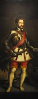

| The Holy Kinship
1540
|
 | The Triumph of Death
1540-42
|
 | The judgement of Solomon
1552
|
| Saint Cecilia
1569
| |
 | The martyrdom of St. Sebastian
1575
|
 | Annunciation
1580
|
 | The Circumcision of Christ
1580
|
 | The Torture of St George
1580
|
 | The Expulsion of Hagar
|
 | Killing of Abel
|
|  | Original Sin
|
|  | Self-portrait as Saint George
|
 | David and Goliath
|